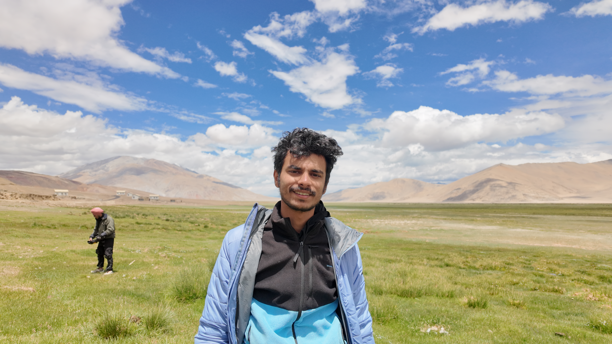

Hi Dear Reader!
Thank you for landing on this page. I am Atharv Dabli, and I (as of April 2026) work as a Research Assistant at ICTD lab, IIT Delhi.
Currently, I work with professor Aaditeshwar Seth on building a Knowledge Graph based retrieval system for local climate and land-atmosphere interaction understanding. The idea is to make a structured knowledge base which captures various climate variables (e.g. soil_moisture, latent_heat_flux, planetary_boundary_layer, land_use etc.) and the relationships between them (how they influence one another), under different climate regimes or contexts. This graph can then be reasoned and queried through by algorithms and using LLMs to generate evidence-based answers for various user queries (e.g. : Would afforestation improve precipitation in a given region?). We are using the large climate science literature, which can be roughly regarded as an unstructured knowledge source. The work here would help in answering various queries including land use suggestions for a climate resilient future. Hopefully, this would be useful for planning and also creating a framework for other similar studies.
Starting this fall (Sept. 2026), I'd be joining ETH Zurich, where I’d be majoring in atmosphere and climate sciences. (MSc Environmental Science, major in Atmosphere and Climate) and I plan to take a deep dive into paleo-climatology, climate processes and feedback, modelling, high performance computing and some remote sensing (esp. radar remote sensing since it seems to be quite useful in various applications).
I graduated with a B.Tech. in Computer Science and Engineering at IIT Delhi, with a minor area in Atmospheric Sciences. I worked for a year as a Data Scientist at SkanAI in Bengaluru, before going back to my ‘academic home’ in Delhi.
Science TV Shows & Documentaries (Cosmos : A spacetime odyssey, Nova, How the universe works etc.), Nature Documentaries (Our Planet, My Octopus Teacher etc.) and History Shows (especially related to history of science, and wars) are something that I like to watch a lot, especially during my middle and high school years, and had a deep impact on me developing curiosity and questioning the ‘ways of the universe’, and reflecting upon life in general.
Since my undergrad years, philosophy as taught by GOAT Acharya Prashant, has had deep impact on me, and even though the impact of psychological and philosophical understanding is first intrinsic, I believe this has been well expressed in my life where I have learned to not conform to others, turned a vegan out of a will to not participate in cruelty towards animals and want to understand and work towards the problems like climate change affecting our home.
Some of the movies or TV shows that have had an impact on me or I enjoyed are Into the Wild, Fight Club, Office Space, Schindler’s List, The Pianist, Rick and Morty. I like travelling, learning the piano, and have started training in Jiu Jitsu.
Work
Projects
College AI Project
Connect Four
A browser-facing version of my old Connect Four AI assignment, with the original Python project and report linked for context.
IIT Delhi ML Coursework
COL774 Machine Learning
Interactive visualizations for my second-year machine learning assignments: optimization, Naive Bayes, SVMs, decision trees, and neural networks.